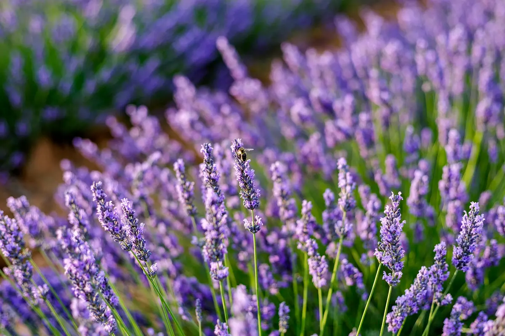

As plantas desempenham um papel fundamental no equilíbrio
ambiental, contribuindo de
maneiras
essenciais para a sustentabilidade do ecossistema. Aqui estão alguns aspectos importantes:
Produção de Oxigênio: Através da fotossíntese, as plantas convertem dióxido de carbono em
oxigênio,
fornecendo o gás vital para a respiração de muitos organismos, incluindo seres humanos.
Ciclo da Água: As plantas desempenham um papel crucial no ciclo da água, absorvendo água
do
solo e
liberando vapor d'água através da transpiração. Isso influencia os padrões climáticos locais e
ajuda
na manutenção dos recursos hídricos.
Habitat e Abrigo: As plantas fornecem habitats vitais para inúmeras espécies, desde
pequenos
insetos
até mamíferos. Elas oferecem abrigo, alimentação e locais de reprodução para muitos organismos.
Fertilidade do Solo: Plantas contribuem para a fertilidade do solo através da
decomposição de
matéria orgânica e ciclagem de nutrientes. Suas raízes também ajudam a prevenir a erosão do
solo.
Biodiversidade: As plantas são a base da cadeia alimentar, fornecendo alimento para
herbívoros, que,
por sua vez, alimentam carnívoros. A diversidade de plantas contribui diretamente para a
biodiversidade global.
Equilíbrio do Dióxido de Carbono: As plantas absorvem dióxido de carbono durante a
fotossíntese,
desempenhando um papel crucial na regulação do equilíbrio do carbono na atmosfera e auxiliando
no
controle do efeito estufa.
Alguns exemplos de plantas que são usadas no nosso dia a dia e seus
benefícios:
Lavanda (Lavandula angustifolia):
Benefícios:
Propriedades Calmantes: A lavanda é conhecida por suas propriedades relaxantes. Seu aroma
suave
ajuda a reduzir
o estresse e a ansiedade, promovendo um ambiente tranquilo.
Antisséptico Natural: Possui propriedades antissépticas e antibacterianas, podendo ser
utilizada
para tratar
pequenas feridas e queimaduras.
Auxílio no Sono: O óleo essencial de lavanda é frequentemente usado para promover um sono
tranquilo
e combater
distúrbios do sono.

Aloe Vera (Aloe barbadensis miller):
Benefícios:
Hidratação da Pele: O gel extraído das folhas de aloe vera é amplamente conhecido por suas
propriedades
hidratantes e calmantes para a pele, sendo utilizado em muitos produtos cosméticos.
Cicatrização de Feridas: A aloe vera possui propriedades cicatrizantes, acelerando o
processo de
cura de
queimaduras leves, cortes e irritações da pele.
Propriedades Anti-inflamatórias: É conhecida por suas propriedades anti-inflamatórias, sendo
aplicada para
aliviar queimaduras solares e irritações cutâneas.
Hortelã (Mentha):
Benefícios:
Alívio de Problemas Digestivos: A hortelã é conhecida por suas propriedades digestivas,
ajudando a
aliviar
desconfortos estomacais, indigestão e náuseas.
Refrescância Respiratória: O óleo de hortelã é utilizado para aliviar sintomas de
congestionamento
nasal e
proporcionar sensação de frescor nas vias respiratórias.
Estímulo Cognitivo: O aroma da hortelã é associado a um aumento na alerta mental e no
desempenho
cognitivo,
podendo ser utilizado para melhorar a concentração.